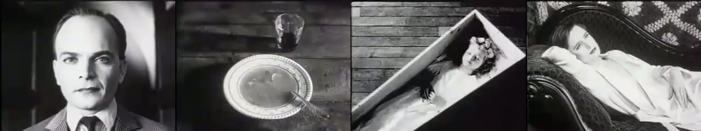
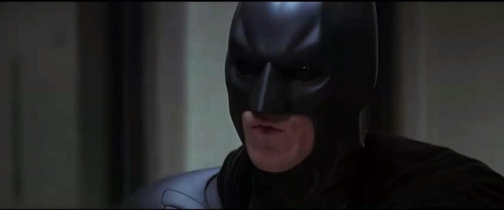
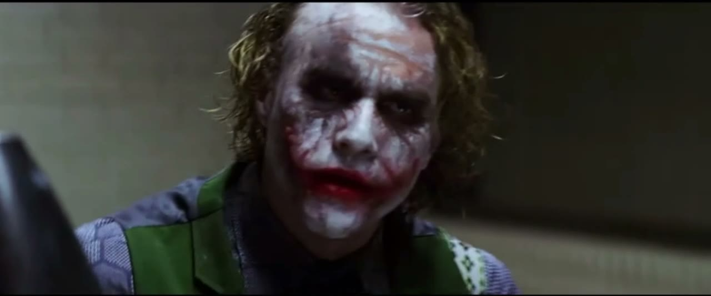
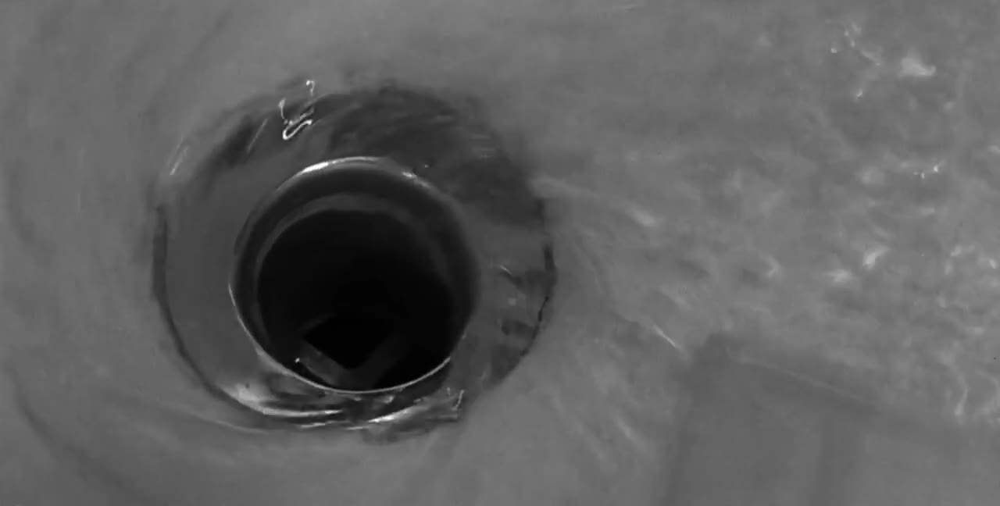
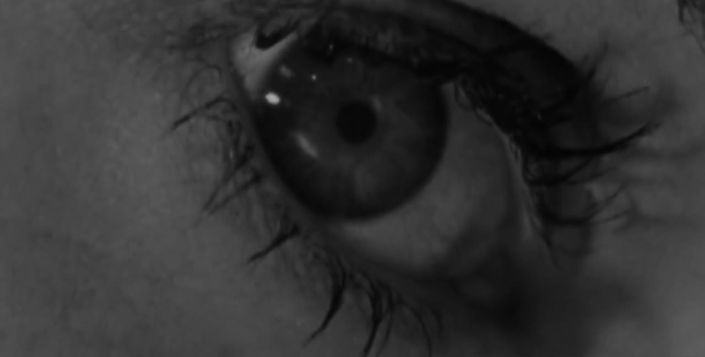

切点与连贯
剪辑是把两个镜头接在一起。接在哪一帧、接上什么，决定了观众看到的是一个连贯的世界，还是一堆碎片。这一章讲最核心的那一刀。
两个镜头接在一起，会长出第三个意思
一百年前，苏联导演列夫·库里肖夫做过一个实验。他拿一个演员面无表情的特写，分别接在三个画面后面：一碗汤、棺材里的孩子、躺椅上的女人。观众看完后称赞这个演员演技精湛：看汤的时候很饿，看孩子的时候很悲伤，看女人的时候有欲望。而那张脸，从头到尾是同一个镜头。

这就是库里肖夫效应Kuleshov effect，也是全部剪辑的地基：单个镜头的意思是不确定的，观众会根据它前后接的东西，自己把意思补出来。A 镜头加 B 镜头，得到的不是 A+B，而是一个新的 C。
这对你有两个直接的用处。第一，一个平淡的素材可以靠前后文“救”活：一张普通的人脸接在一条惊人的数据后面，就成了“震惊”。第二，接错了会产生你不想要的意思：一个人讲完话，你接了一个别人皱眉的镜头，观众就认为那个人不同意他。
剪辑在做三件事
| 做什么 | 说明 | 例子 |
|---|---|---|
| 删 | 把不需要的时间拿掉。现实中十分钟的事，片子里十秒讲完 | 一个人出门到公司：关门，上车，推开办公室的门。三个镜头，三秒 |
| 接 | 决定谁挨着谁，由此产生意思 | 库里肖夫实验；讲完一个观点接一张证据截图 |
| 控 | 决定每个镜头留多久，由此产生节奏 | 越剪越快是紧张；突然给一个长镜头是喘息 |
这一章讲“删”和“接”，下一章讲“控”。
为什么在这里切：六个理由
剪辑师沃尔特·默奇（《现代启示录》《教父》的剪辑师）在《眨眼之间》这本书里，给“一个好的剪切点”列了六条标准，并且给了权重。这张表在行内被引用了三十年，值得原样看一遍。
| 标准 | 权重 | 问的是 |
|---|---|---|
| 情绪 | 51% | 这一刀让观众此刻的感受对不对 |
| 故事 | 23% | 这一刀有没有把事情往前推 |
| 节奏 | 10% | 这一刀落在的时间点舒不舒服 |
| 视线 | 7% | 切过去之后，观众的眼睛是不是正好落在新画面的重点上 |
| 画面平面 | 5% | 左右关系、轴线有没有乱 |
| 三维空间 | 4% | 人物在空间里的位置关系是否连贯 |
重点是那个排序。默奇说，如果必须牺牲，就从下往上放弃：宁可空间上有点不连贯，也要保住情绪。新手恰恰相反，花大力气保证动作接得严丝合缝，却没问这一刀切下去感觉对不对。
“视线”这一条对快节奏的片子尤其实用。上一个镜头结束时观众的眼睛在画面哪个位置，下一个镜头的重点就该出现在哪个位置附近。眼睛不用找，剪得再快也跟得上。这正是《疯狂的麦克斯》全片把主体放在中心的原因。
连贯剪辑：让观众忘记有剪辑
好莱坞在一百年里磨出了一套规则，目的只有一个：让观众感觉不到剪切，只觉得自己在看一件连续发生的事。这套规则叫连贯剪辑continuity editing。你不需要全背下来，但要认得其中几个名字，因为它们同样是 AI 剪口播、剪对话、剪教程时的默认语法。
正反打和轴线
两个人对话，最标准的拍法是：一个镜头拍 A（常常带着 B 的肩膀），一个镜头拍 B，来回切。这叫正反打shot / reverse shot。


正反打之所以不乱，是因为遵守了180 度轴线180-degree rule：在两个人之间画一条假想的线，所有机位都待在这条线的同一侧。这样 A 永远在画面左边朝右看，B 永远在右边朝左看。一旦摄影机越过这条线，两个人在画面上会突然换边，观众会懵一下：他们换位置了？
对用 AI 的人来说，轴线最常见的用处是方向的一致：流程图从左往右，那全片的“前进”就都是往右；一个东西从左边滑出去，下一个画面它应该从左边滑进来还是从右边？答案是右边进来往左走才接得上运动方向，除非你要表达“回来了”。
在动作中间切
动作切cut on action是最常用的隐藏剪切的办法：在一个动作进行到一半的时候切到另一个角度，让动作在下一个镜头里完成。比如一个人伸手去开门，手刚碰到门把时切到门的另一侧，门被推开。观众的注意力被动作牵着走，根本察觉不到镜头换了。
反过来，等一个动作完全做完、人静止下来再切，这一刀就会很显眼，节奏也会一顿一顿的。所以有一句老话：切在动的时候，不要切在停的时候。对图形动效也一样：趁元素还在运动的时候切走或者让下一个元素进来，比等它彻底停稳再接下一步要流畅。
视线匹配
视线匹配eyeline match：先给一个人往画面外某处看的镜头，再切到他看的那个东西。库里肖夫实验用的就是它。它是把“人”和“信息”连起来最自然的方式：口播里的人往下瞥了一眼，切到手机屏幕；主持人看向旁边，切到嘉宾。
跳切
如果相邻两个镜头的景别和角度几乎一样，只是时间上跳了一段，画面里的人会突然“抖”一下。这叫跳切jump cut。连贯剪辑的规矩是尽量避免它，办法叫30 度规则：相邻两个镜头，机位角度至少差 30 度，或者景别明显不同。
但是跳切后来成了一种风格。戈达尔在 1960 年的《精疲力尽》里故意用它来打破流畅感；六十年后，它成了所有口播视频的标配：把一段话里的停顿、口误、废话全剪掉，人就在同一个景别里一跳一跳地说下去。观众早已习惯，甚至会觉得这样更“干货”、更快。
口播的跳切有三种常见的处理方式，可以直接点给 AI：
| 处理 | 做法 | 效果 |
|---|---|---|
| 保留跳切 | 直接硬接，不掩饰 | 快、直接、有网感。Vlog 和知识类口播的默认 |
| 缩放遮掩 punch in | 每隔一句把画面放大到 110%–120%，下一句再回到 100%，像是换了个景别 | 看起来像两个机位，跳的感觉被“合理化”了，还顺便做了强调 |
| B-roll 遮掩 | 在剪切点上面盖一段别的画面，声音连续 | 完全看不出剪过。最干净，但需要有 B-roll 可盖 |
插入和切出
两个随手就能用的小镜头：
- 插入镜头insert：切到场景内的一个细节特写。手在键盘上、屏幕上的一行字、桌上的咖啡。
- 切出镜头cutaway：切到场景外的一个相关画面。讲到“去年”时切一张去年的照片；讲到用户时切一段用户的评论截图。B-roll 大部分都是切出镜头。
还有一个值得单独记的：反应镜头reaction shot。事情发生后，切到一个人看到它时的表情。喜剧的笑点、惊悚的吓点、综艺的梗，一多半落在反应镜头上而不是事件本身。口播里说完一个离谱的事实之后，切回讲述者自己无语的脸停半秒，就是一个反应镜头。
把两条线剪在一起
交叉剪辑
交叉剪辑cross-cutting是在两个（或更多）不同地点同时发生的事情之间来回切。它让观众觉得这些事有关联：要么即将相撞（警察在赶来，凶手在动手），要么互为对照。
这一段还示范了一件事：声音可以把分开的画面粘起来。画面在两地之间跳，但声音始终是教堂里的那一条，观众就把它们读成了“同一件事的两面”。讲解片里用同一条旁白串起不同来源的素材，是完全一样的原理。
匹配剪辑
匹配剪辑match cut是让前后两个镜头在某一方面“对上”：形状、位置、运动方向、颜色或者声音。两个本来不相干的画面因此被强行联系起来，而且过渡得非常顺。


匹配剪辑里名气最大的一个，在库布里克的《2001 太空漫游》里。猿人把骨头抛向天空，骨头在空中翻转，下一个镜头直接接上一艘形状相似的飞船。一刀跨过了几百万年。
| 匹配什么 | 怎么做 | 在讲解片里的用法 |
|---|---|---|
| 形状 graphic match | 两个画面里有形状、位置相近的东西 | 一个圆形的 logo 接一个圆形的饼图；一张照片的边框接下一张照片的边框 |
| 动作 match on action | 前一镜的动作在后一镜继续 | 手指向右划，下一个画面从右边滑入 |
| 位置 eye trace | 前后两镜的重点在画面同一位置 | 上一屏的数字在中间，下一屏的标题也在中间 |
| 声音 sound match | 一个声音接到另一个相似的声音 | 键盘的“嗒”接到钟表的“嗒” |
匹配剪辑是所谓“高级转场”的真正来源。它不靠任何特效，靠的是提前设计好前后两个画面的构图。要求 AI 做匹配剪辑时，你得同时指定两个镜头。
急切
急切smash cut是从一个状态毫无预兆地硬切到完全相反的状态：从尖叫切到寂静，从“我绝对不会去”切到他已经站在现场。它利用的是反差，常用于喜剧和惊吓。声音在这里比画面更关键：前一个镜头的声音必须在剪切点上戛然而止。
切早一点，还是晚一点
同一个剪切点，前后挪几帧，感觉会变。一些经验：
- 晚进早出。一个镜头，在“事情已经开始了”的时候切进来，在“事情刚做完、还没凉”的时候切走。新手总是从头放到尾，前后都拖着一截没用的时间。
- 话没说完就切。对话里，在说话的人说到最后几个字时就切到听的人，会比等他说完再切流畅得多。
- 切在眨眼上。默奇的观察：人在想完一件事的时候会眨眼。在人物眨眼的那一下切，往往正好是一个想法结束的地方。
- 留一拍。一句有分量的话说完，别马上切。多留十几帧，让它落地。这多出来的半秒就是“呼吸感”。
- 开头的黑场和结尾的尾巴都剪掉。素材两头经常有准备动作和收尾动作：看镜头、伸手关机、笑场。
默认用硬切
这一章讲的所有接法：正反打、动作切、匹配剪辑、交叉剪辑，镜头之间都是直接接上的，没有任何过渡效果。这叫硬切hard cut。它是剪辑的默认状态，电影里九成以上的剪切点都是它。
淡入淡出、叠化、划像这些转场，是在硬切之外有特别用意时才用的。如果你发现自己总想在两个镜头之间加点什么“让它顺一点”，通常说明这两个镜头本身接得不对：景别没跳开，方向没接上，或者切点的位置不对。先解决那个问题。
片例截图与片段仅用于学习与评述，版权归原作者与出品方所有，出处见片单与出处。